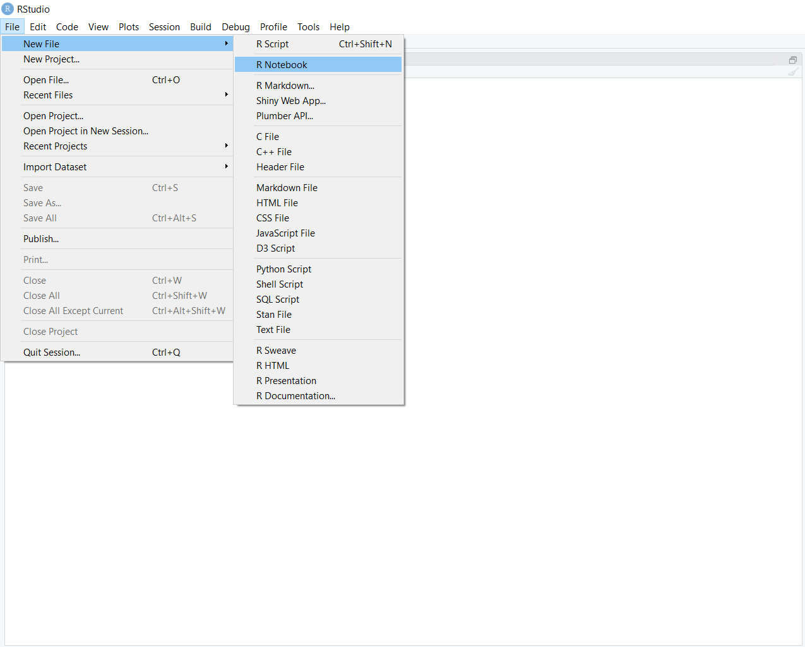
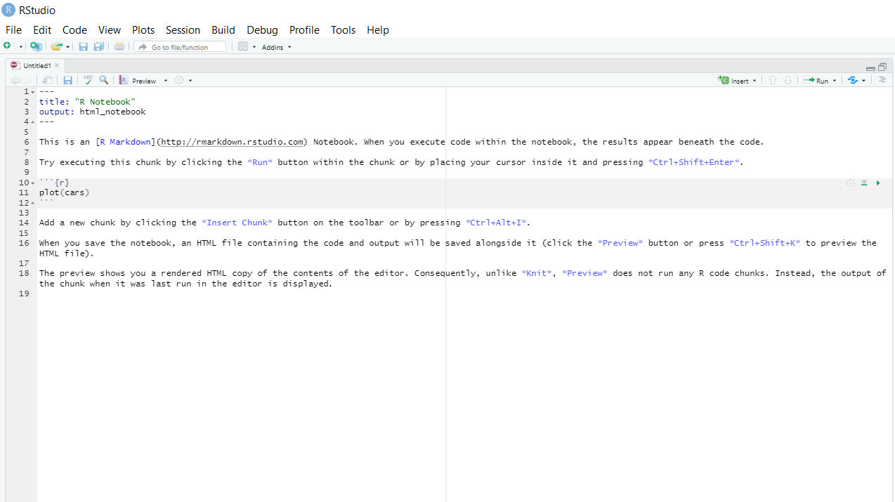
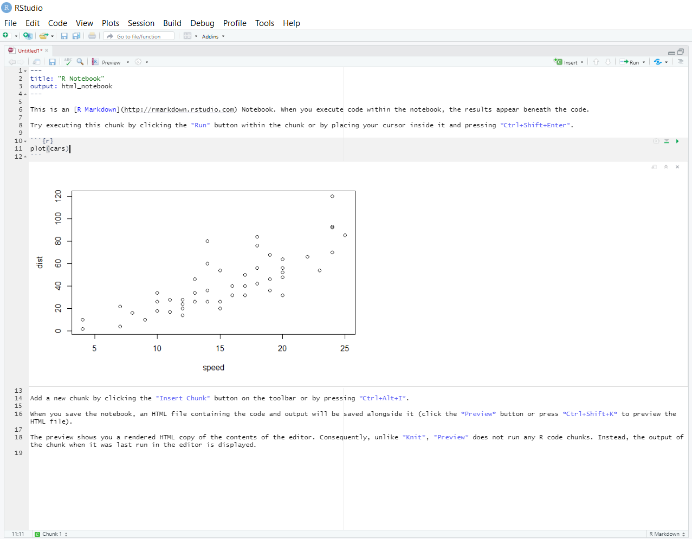

Chapter 5 Workflow
We have computed our models. Now we need to write up our results and put them in nice tables. If you want to do this from scratch, it can be really annoying. If you do not believe me, try writing the regression tables out by hand in TeX . Furthermore, you have to do it every time you change your model, change variables, or fix a bug. You might also be working in a group, where you want to share your code with each other, edit it collaboratively and so on.
Luckily, we can automate this all in R!
Below, we first go through how to automatically output journal-quality LaTeX or HTML tables in R every time you run your code, and to share code across teams. This gives us two ways of nicely automating our workflow. Firstly, if you want to write your document in a LaTeX, you can install a local LaTeX editor on your machine (I personally prefer TeXMaker https://www.xm1math.net/texmaker/) and output TeX tables to the same location you store your TeX file. Then, whenever you run your code, it will also update the tables in your LaTeX document. Otherwise, we can actually write the entire document in R as something called an RMarkdown file (like these notes). Then, as we have here, we can write our report and code in the same document and thus see our tables and so on directly in the document.
We first cover how to automate creating tables using Stargazer. We then demonstrate how to do it for a general dataframe using XTable. We do not have the space to do RMarkdown justice here, so take a look at the introductory files on their website https://rmarkdown.rstudio.com/lesson-1.html.
5.1 Regression tables with Stargazer
When we have our lm-type output object, and our standard errors, we want to
put them in a nice regression table with the appropriate specification tests
that we can put in our report or paper. Typically, this will be a LaTeX table.
The most common way to automat this is the stargazer package we saw
briefly earlier. It is very flexible, giving us lots of choice
what to include or exclude, and supports both Tex and HTML tables.
The basic command in stargazer is stargazer(). This is the command to create
the table. As the first argument, we pass a single regression model or a list
of regression models. If we pass a list of regression models, it will automatically
put each model in its own column in the table.
library(stargazer)##
## Please cite as:## Hlavac, Marek (2018). stargazer: Well-Formatted Regression and Summary Statistics Tables.## R package version 5.2.2. https://CRAN.R-project.org/package=stargazer# To download the original data, go to
# https://scholar.harvard.edu/files/dell/files/nationbuilding.pdf
# The file we will use is there as `firstclose_post.dta'
library(sandwich)
library(stargazer)
#setwd("C://Users//kiera//OneDrive//Documents//Tinbergen MPhil//Econometrics_1_TA//intro_R_TI")
df <- as.data.frame(read.csv("vietnam_war.csv", stringsAsFactors = F))
df[["md_ab_square"]] <- df[["md_ab"]]^2
m2 <- lm(fr_strikes_mean ~ md_ab + md_ab_square, data=df)stargazer(m2, type="html")| Dependent variable: | |
| fr_strikes_mean | |
| md_ab | -0.304*** |
| (0.043) | |
| md_ab_square | -11.375*** |
| (0.345) | |
| Constant | 0.306*** |
| (0.003) | |
| Observations | 12,207 |
| R2 | 0.082 |
| Adjusted R2 | 0.082 |
| Residual Std. Error | 0.295 (df = 12204) |
| F Statistic | 543.513*** (df = 2; 12204) |
| Note: | p<0.1; p<0.05; p<0.01 |
By default, stargazer returns the code for a LaTeX table object with the basic standard errors. These look like the tables you see in journals. Here, we use html output to integrate it into the document.
There are many, many different arguments we can specify to change the style of the table, titles and variable names, what we include or omit, and different standard errors. Go and look at the package vignette at https://cran.r-project.org/web/packages/stargazer/vignettes/stargazer.pdf for a list of all of the arguments and commands. In the code section below, we will demonstrate some of the most common and useful ones.
# Lets use the m2 and m_time models from before to demonstrate how Stargazer
# works
# now lets use factors to add year fixed effects
m_time <-lm(fr_strikes_mean ~ as.factor(yr) +md_ab + md_ab_square, data=df)
m2_HAC_ses <- sqrt(diag(vcovHAC(m2)))
# lets add some labels to start with and report coefficients with two digits
# these need to be written in the appropriate TeX
# write all backslashes '\' as '\\' insteadstargazer(m2, title = "Effect of closeness to threshold on airstrike intensity in South Vietnamese hamlets",
dep.var.caption = "Dependent variable: Mean foreign airstrikes",
intercept.bottom=T, digits = 2,
covariate.labels = c("$\\text{Distance}^{2}$", "$\\text{Distance}$^{2}"), type="html")| Dependent variable: Mean foreign airstrikes | |
| fr_strikes_mean | |
| Distance2 | -0.30*** |
| (0.04) | |
| Distance2 | -11.38*** |
| (0.35) | |
| Constant | 0.31*** |
| (0.003) | |
| Observations | 12,207 |
| R2 | 0.08 |
| Adjusted R2 | 0.08 |
| Residual Std. Error | 0.29 (df = 12204) |
| F Statistic | 543.51*** (df = 2; 12204) |
| Note: | p<0.1; p<0.05; p<0.01 |
# now lets manually specify the cutoffs for significance stars
stargazer(m2, title = "Effect of closeness to threshold on airstrike intensity in South Vietnamese hamlets",
dep.var.caption = "Dependent variable: Mean foreign airstrikes",
intercept.bottom=T, digits = 2,
covariate.labels = c("$\\text{Distance}^{2}$", "$\\text{Distance}$^{2}"),
star.cutoffs = c(0.05,0.01,0.001), type="html")| Dependent variable: Mean foreign airstrikes | |
| fr_strikes_mean | |
| Distance2 | -0.30*** |
| (0.04) | |
| Distance2 | -11.38*** |
| (0.35) | |
| Constant | 0.31*** |
| (0.003) | |
| Observations | 12,207 |
| R2 | 0.08 |
| Adjusted R2 | 0.08 |
| Residual Std. Error | 0.29 (df = 12204) |
| F Statistic | 543.51*** (df = 2; 12204) |
| Note: | p<0.05; p<0.01; p<0.001 |
# now we can add some different standard errors - our HAC standard errors from
# before
stargazer(m2, title = "Effect of closeness to threshold on airstrike intensity in South Vietnamese hamlets",
dep.var.caption = "Dependent variable: Mean foreign airstrikes",
intercept.bottom=T, digits = 2,
covariate.labels = c("$\\text{Distance}^{2}$", "$\\text{Distance}$^{2}"),
star.cutoffs = c(0.05,0.01,0.001), se.list = m2_HAC_ses, type="html")| Dependent variable: Mean foreign airstrikes | |
| fr_strikes_mean | |
| Distance2 | -0.30*** |
| (0.04) | |
| Distance2 | -11.38*** |
| (0.35) | |
| Constant | 0.31*** |
| (0.003) | |
| Observations | 12,207 |
| R2 | 0.08 |
| Adjusted R2 | 0.08 |
| Residual Std. Error | 0.29 (df = 12204) |
| F Statistic | 543.51*** (df = 2; 12204) |
| Note: | p<0.05; p<0.01; p<0.001 |
| Distance2 | Distance2 | md_ab_square |
| 0.01 | 0.06 | 0.64 |
# now lets add another regression - including the time dummies - and choose
# not to display the dummies as they look messy
m_list <- as.list(m2, m_time)
# computing some HAC standard errors for these models
m_time_HAC_ses <- sqrt(diag(vcovHAC(m_time)))
ses <- as.list(m2_HAC_ses, m_time_HAC_ses)
stargazer(m_list, title = "Effect of closeness to threshold on airstrike intensity in South Vietnamese hamlets",
dep.var.caption = "Dependent variable: Mean foreign airstrikes",
column.labels = c("No time trend", "Time trend"),
intercept.bottom=T, digits = 2,
covariate.labels = c("$\\text{Distance}^{2}$", "$\\text{Distance}$^{2}"),
star.cutoffs = c(0.05,0.01,0.001), se.list = ses, omit="yr", type="html")| Dependent variable: Mean foreign airstrikes | |
| fr_strikes_mean | |
| No time trend | |
| Distance2 | -0.30*** |
| (0.04) | |
| Distance2 | -11.38*** |
| (0.35) | |
| Constant | 0.31*** |
| (0.003) | |
| Observations | 12,207 |
| R2 | 0.08 |
| Adjusted R2 | 0.08 |
| Residual Std. Error | 0.29 (df = 12204) |
| F Statistic | 543.51*** (df = 2; 12204) |
| Note: | p<0.05; p<0.01; p<0.001 |
| 0.01 |
| 0.06 |
| 0.64 |
# finally, lets output it as a tex file called 'reg_table.tex'
stargazer(m_list, out="reg_table.tex", title = "Effect of closeness to threshold on airstrike intensity in South Vietnamese hamlets",
dep.var.caption = "Dependent variable: Mean foreign airstrikes",
column.labels = c("No time trend", "Time trend"),
intercept.bottom=T, digits = 2,
covariate.labels = c("$\\text{Distance}^{2}$", "$\\text{Distance}$^{2}"),
star.cutoffs = c(0.05,0.01,0.001), se.list = ses, omit="yr", type="html")| Dependent variable: Mean foreign airstrikes | |
| fr_strikes_mean | |
| No time trend | |
| Distance2 | -0.30*** |
| (0.04) | |
| Distance2 | -11.38*** |
| (0.35) | |
| Constant | 0.31*** |
| (0.003) | |
| Observations | 12,207 |
| R2 | 0.08 |
| Adjusted R2 | 0.08 |
| Residual Std. Error | 0.29 (df = 12204) |
| F Statistic | 543.51*** (df = 2; 12204) |
| Note: | p<0.05; p<0.01; p<0.001 |
| 0.01 |
| 0.06 |
| 0.64 |
5.2 General tables with XTable
We might want to print something other than a regression table though as a LaTeX
table. In general, we can compute lots of different things we might want to show
our readers. If we can compute them, we can put them in a data frame. We just
need a way to turn the dataframe into a nice LaTeX or HTML table. The xtable
package allows us to do so.
The xtable package is built around the xtable() function. This function
creates a nice table in the format we want. Then, we need to print() it. This
allows us to save it as a file in the type of our choice. Again, there are lots
of arguments to both functions. We do not go through them all here - instead read
the documentation for the functions if you are interested.
We will demonstrate the functionality by creating a balancing table for some of
our data using the RCT package,
# Lets construct a balancing table for hamlets occupied by the US Army vs USMC
library(data.table)
library(RCT)## Warning: package 'RCT' was built under R version 4.0.5library(xtable)
df_mar <- as.data.frame(read.csv("marines_hamlet.csv"))
# creating a balacing table using the balance_table function from RCT
# first argument is the data frame containing all our variables we want
# to check, and the second argument is our treatment variable
# lets store it as a dataframe, and rename the columns so they look a bit
# nicer
sum_tbl <- as.data.frame(balance_table(df_mar[,c(4:7, 9:12, 42)], "treat"))
names(sum_tbl) <- c("Variable", "Mean - USMC hamlets", "Mean - US Army hamlets",
"P-value for difference in means")
# now lets store our balancing table in a nice format using the xtable
# function
xtab <- xtable(sum_tbl, caption="Balancing table", digits=2)
# finally, lets store it as a TeX file using `print`
# First argument has to be the xtable object
# file argument gives the file name
# we can change the location in our computer by changing the
# working directory with setwd(file_path_as_string)print(xtab, include.rownames=FALSE, file="sum_tbl.tex")5.3 Writing documents with RMarkdown
Markdown is the R way of creating a notebook - chunks of code set between chunks of text, compiled in Tex or HTML form. It is similar to a Jupyter Notebook for Python. Markdown is a very nice way to present code and results together for an assignment or technical document. For more detail, see ‘R Markdown - the Definitive Guide’ https://bookdown.org/yihui/rmarkdown/ .
Start by installing the package rmarkdown - run install.packages('rmarkdown')
in the console. To open a markdown document in RStudio, go to file.

Click on ‘file.’ You will see a drop-down menu. You can select either ‘R Notebook’ or ‘R Markdown.’ ‘R Notebook,’ is a newer version of the Markdown document, so generally use this.
Then you will see a screen like the following with a white background, punctuated by grey chunks.

The white space is where you write text. Add headers by putting #, ##, or ### ahead of sections
of text.
The grey chunks are where you can write your code. Add new chunks of code using the ‘insert’ button on the top right of the screen. Run and test individual chunks by pressing the play button on the top right of the chunk.

When you are ready to compile the whole document, knit it by pressing the ‘knit’ button on the top left. knit the file, it runs the code, and presents the output together in either a pdf document with Tex (if you have Tex installed on your machine), or a HTML document. If you output something in your code, like a graph, R will display it below the code.